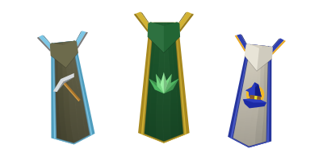

I art-directed this one with Claude rather than drawing it by hand. These are the calls that shaped it: what I pushed on, what I left alone, and when I said stop.

Floating was too much, so I asked for it subtler, then slower still in the overview. Appearing runs small to large with natural motion. Disappearing mirrors it in reverse, then got shorter because it lingered.
Rule: motion should be felt, not noticed. And where something already worked (untick a cape and the rest glide to their new places), leave it alone.
The first shading read like folded paper, too concertina. I swapped it for a single source: light from the screen centre, shining outward, stepping gradually across each section. The section lines got a slight curve for texture, the vertical lines got lighter, and the effect softened in both the overview and the focused view.
Rule: one believable light beats a lot of clever shading.
Construction follows the in-game layering: the trim is a back layer that pokes out slightly below the hem, the body sits on top, and the hood and shoulder pads sit in front. Trim runs down the sides only, never across the bottom. Herblore exists in two takes, an RS3 version and one rebuilt from an OSRS reference. Both are kept.
Rule: study how the original is put together before simplifying it.
Cooking's emblem is a pot, not a chicken, with a neck that flares at the top. It's shaded to read round, slightly smaller, with the outline slimmed but still unbroken all the way round. The smoke wisps are rectangular, not diamond, with finger-joint bends that lean differently. Mining's graphic is nudged right to counterbalance it.
Rule: the small things are where a piece stops looking generated.
I asked for the shoulder pads to be redone once, then said to keep them exactly as they are. The large focused view got "perfect, don't touch". The shading got "looks really good". Those decisions are written down in the repo so nothing quietly drifts later.
Rule: part of directing is saying what is finished.
No image assets: every cape is layered SVG shape and colour with real depth in 3D. The background is sparse dots at varied, subtle opacities. It's built to be light on phones and weaker machines, with idle capes drawn as one flat SVG and the 3D stack only built when you focus one.
The in-game font is proprietary, so the title uses the closest free match, Jersey 10, in the familiar orange with a hard black shadow.
Rule: borrow the feeling, not the assets.